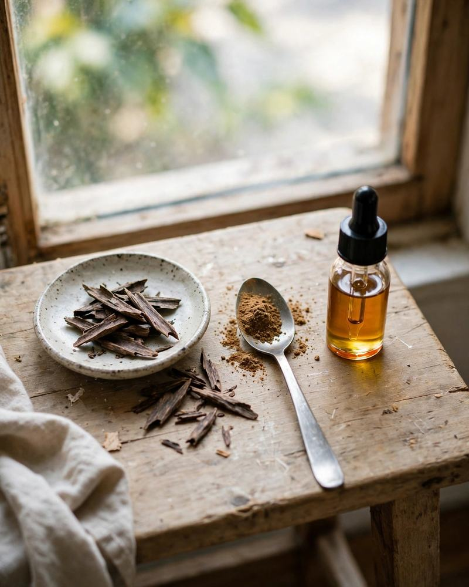

《中国药典》收载沉香，性味辛、苦，温；归脾、胃、肾经；功效是行气止痛，温中止呕，纳气平喘。用于胸腹胀闷疼痛，胃寒呕吐呃逆，肾虚气逆喘急。
注意：这是入药的记载。入药有配伍、剂量、炮制讲究，由医生开方，不是自己泡水喝。药典记载不等于可以日常食用。
第一，有效成分溶出有限。沉香的有效成分主要是挥发油和树脂，泡水溶出很少，喝了也吸收不了多少。第二，来源不明。市售沉香可能含香精、胶水、染色剂，入口风险高。
第三，体质差异。沉香性温，不是人人都适合。自己乱喝，喝错了反而伤身。
先问医生或中医师，说明自己的情况，听专业意见。通过正规渠道买药用级沉香，别用首饰级、摆件级的料入口。
不要听信偏方和直播间说法。偏方没有剂量概念，直播间说法没有责任主体，吃出问题没人负责。
文章 30 讲的碎料泡水，是品香用法：热水激发香气，用来闻香，不是用来喝。别把品香和服药混为一谈。
品香闻的是香气，服药吃的是成分。两种用法目的不同、方法不同、风险也不同。